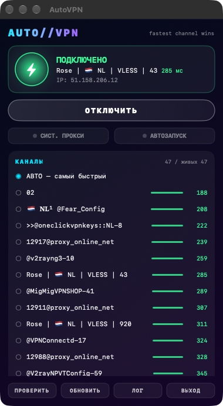
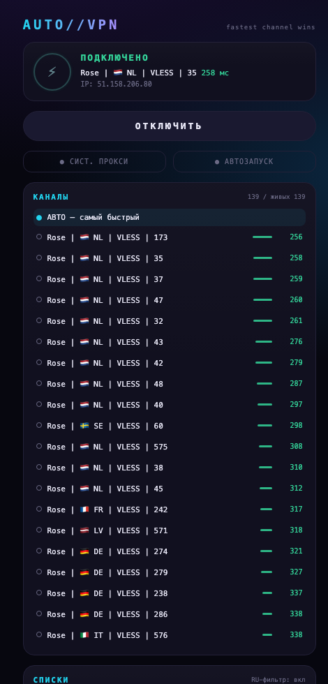

Самонаводящийся VPN-клиент для macOS, Windows и Linux. Добавляешь список VLESS-серверов — он сам находит живые, подключается через самый быстрый и сам себя чинит.
Self-healing VPN client. Feed it VLESS subscription lists — it probes every server, connects through the fastest one and keeps healing itself.


подписки ──► фильтр (tls/reality, мусор мимо) ──► выборка до 400
│
самолечение ◄── удаление мёртвых ◄── замер всех ◄─┘
│
└─► всегда подключён через самый быстрый живой канал
urltest-группа sing-box сама выбирает быстрейший сервер и мгновенно переключается, когда он падает.
Каналы без отклика удаляются. Предохранитель: если умерли все разом — это сбой сети, ничего не трогаем.
Живых меньше четырёх или туннель упал — подписки перекачиваются автоматически.
Свои URL-подписки плюс пять вшитых популярных публичных списков. Включай, выключай, комбинируй.
Одна кнопка — и весь трафик системы идёт через туннель. networksetup, реестр WinINET или gsettings.
Swift для macOS, Go для Windows и Linux. Один бинарник ~7 МБ. Без Electron, без Python, без зависимостей.
Движок sing-box встроен в релизы — отдельно ставить не нужно.